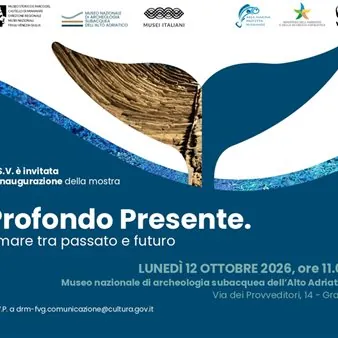

da lun 12 ott a gio 30 set · dalle 14:00
Tiefgründige Gegenwart
Archäologie, Naturwissenschaften und zeitgenössische Kunst treffen am 12. Oktober in Grado im Nationalmuseum für Unterwasserarchäologie der Oberen Adria aufeinander – eine Ausstellung, die aus der Zusammenarbeit zwischen der WWF-Stiftung – Meeresschutzgebiet Miramare und dem…
 Indicazioni
Indicazioni
- Costi e prenotazioni
- Costo non indicato · Prenotazione non indicata
- Programma
- Programma da verificare. Apri la fonte ufficiale per orari e possibili aggiornamenti.
- In caso di maltempo
- Nessuna indicazione specifica pubblicata.
- Note
- Acquisito automaticamente dalla fonte.
L’EVENTO
Descrizione completa
Am 12. Oktober wird in Grado im Nationalmuseum für Unterwasserarchäologie der Oberen Adria eine Ausstellung eröffnet, die Archäologie, Naturwissenschaften und zeitgenössische Kunst vereint und aus der Zusammenarbeit zwischen der WWF-Stiftung – Meeresschutzgebiet Miramare und dem Historischen Museum und Park des Schlosses Miramare – Regionaldirektion der Nationalmuseen Friaul-Julisch Venetien hervorgegangen ist.
Das Projekt „Profondo presente“ bringt zwei „Giganten“ der Oberen Adria miteinander ins Gespräch: das römische Schiff „Iulia Felix“, das im ersten Stock des Museums ausgestellt ist, und den Wal „Boralena“, dessen Skelett zum ersten Mal vollständig der Öffentlichkeit präsentiert wird. Die Ausstellung, die sich durch eindrucksvolle immersive Effekte auszeichnet und durch multimediale Inhalte bereichert wird, erweitert den Rundgang durch das Museum um neue Inhalte, die dem Meer und den darin lebenden Arten gewidmet sind. Dabei wird deutlich, wie interdisziplinär die Unterwasserforschung ist und dass sie ein außergewöhnliches Forschungsgebiet darstellt, um unsere Vergangenheit kennenzulernen und die aktuellen Veränderungen im marinen Ökosystem zu verstehen.
Die „Iulia Felix“ zeugt von der Anwesenheit des Menschen in der Oberen Adria in der Vergangenheit; „Boralena“ erzählt vom Leben im Meer und seinen Veränderungen in der Gegenwart. Die ortsspezifische Kunstinstallation „Blue Life“, die die Künstlerin Elisabetta Milan für das Museum geschaffen hat, leitet den Ausstellungsrundgang ein und lädt uns ein, das Meer im Wandel der Zeit zu betrachten und über unsere Verantwortung für seinen Schutz nachzudenken.
Anlässlich der Eröffnung ist das Museum am 12. Oktober ausnahmsweise von 14 bis 18 Uhr für die Öffentlichkeit zugänglich, letzter Einlass ist um 17.30 Uhr.
Organizzato da: Fondazione WWF – Area Marina Protetta di Miramare Museo Storico e Parco del Castello di Miramare – Direzione regionale Musei nazionali del Friuli Venezia Giulia.
IL PROGRAMMA
Programma e orari
Appuntamenti raccolti dalle fonti elencate. Dove manca un orario, non è ancora disponibile in questa scheda.
Programma pubblicato
- Dal 2026-10-12 al 2027-09-30
INFORMAZIONI UTILI
Prima di partire
- Controllare la fonte prima di partire.
ORGANIZZAZIONE